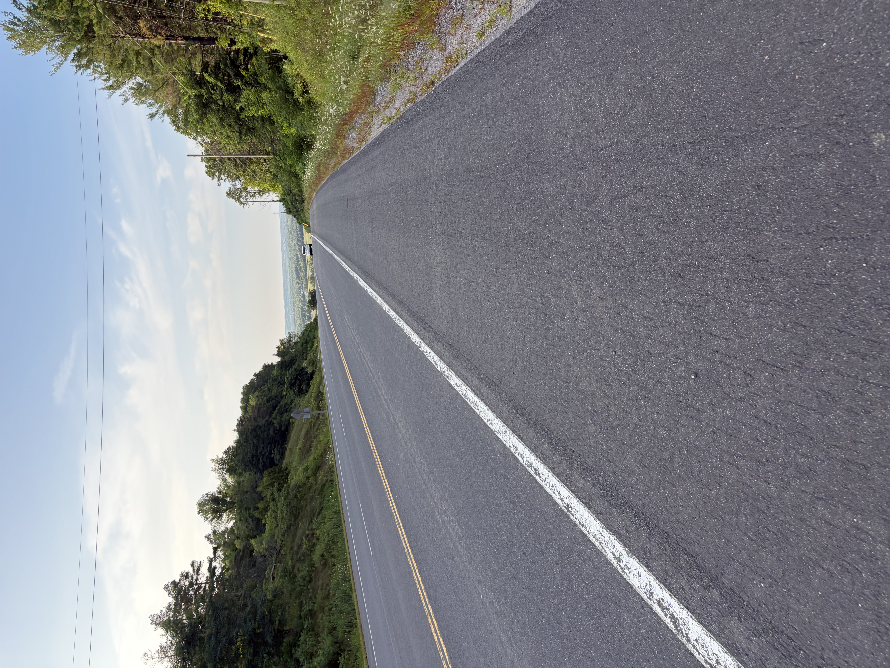
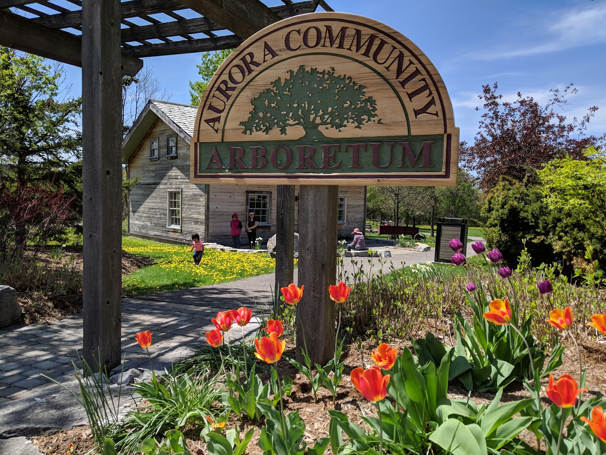
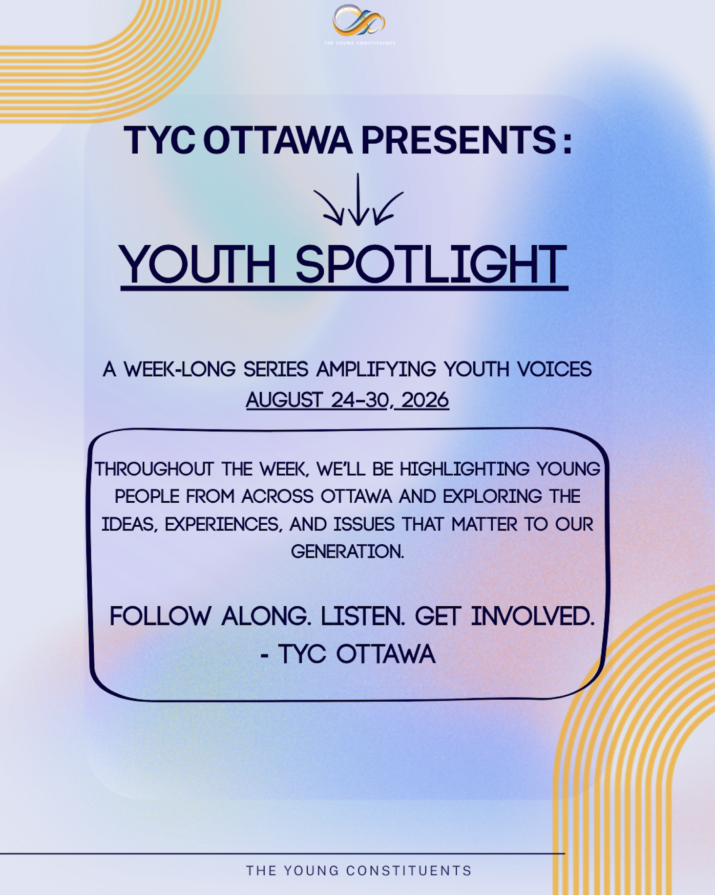

Bradford Cleanup
Bradford, ON · Friday, September 4, 2026
View Event →News · Events & Programs
Explore past events and programs from The Young Constituents community across Canada.

Bradford, ON · Friday, September 4, 2026
View Event →
Aurora, ON · Saturday, August 29, 2026
View Event →
Online · August 24 to 30
View Event →Online · Saturdays from 11:30 AM to 12:00 PM EST
View Event →